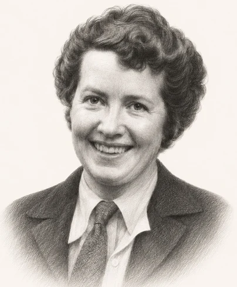
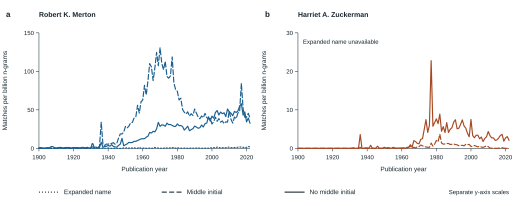

Who gets remembered?
Robert K. Merton was the sole author listed on the 1968 Science paper “The Matthew Effect in Science”. Its opening paragraph identifies the interviews conducted by Harriet Zuckerman as part of the study’s empirical basis. Carry forward only the byline and that contribution disappears from view. Yet the Wikipedia revision of 1 November 2026 names both scientists and says that they coined the term together in 1968. It gives Zuckerman a different role from the one described by the participants and places the naming four years after a contemporary newspaper attributed it to Merton.3 6 8 10
The puzzle is how credit changes on its way from research to public memory. A citation can correctly identify a paper and leave out the work that made it possible. Even an account that restores a contributor’s name can assign that person a different contribution. The distinction matters for anyone trying to reconstruct how a scientific term acquired its meaning and who did the work behind it.
In Merton’s 1968 account, a scientist’s established reputation can increase the credit and visibility their work receives when contributions are comparable. Unequal recognition is an outcome of that status-dependent process. In 1988, Merton extended the analysis to cumulative advantage, asking how earlier recognition and resources improve access to later opportunities. The history of the term poses a separate question about who contributed to naming and explaining the effect.3 4
The evidence changes the starting point
On 5 February 1964, Robert K. Merton gave an NIH lecture, listed among meetings held in the Clinical Center’s annual report. In 1988 Merton recalled briefly presenting the central idea at that lecture. The words he used remain unknown. A dated record of what he said could establish earlier oral use. Moving the earliest public print attestation before May would require locating an earlier publication using “Matthew effect” in the same scientific-credit sense.4 20
In the Statesman of 19 May 1964, Charles Mindel and Doris Bondy’s report “Merton Speaks” describes Robert K. Merton discussing “the social phenomenon that he names the ‘Matthew Effect’” (p. 6). The continuation on p. 7 explains the misallocation of credit for scientific contributions and connects the name to the Book of Matthew. This is the earliest public print witness located here for the expression in its scientific-credit sense, and a contemporary attribution of naming to Merton.6
The report gives us more than an announcement: it describes a lecture as having taken place. Its issue date is secure, but its opening “On Friday May 13” contains a weekday/date conflict. We retain that wording. An earlier issue (5 May, p.11) advertised a Merton lecture for 15 May at 4:45 p.m. in the humanities building faculty lounge. It gives neither full name nor title, so its connection to the reported lecture remains provisional and cannot settle the delivery day.7 The report does not establish the first-ever utterance or exclude other contributors to the concept. An AAAS notice printed in Science on 16 October 1964 (p. 437) adds a different connection: Merton's paper, Zuckerman's interviews with Nobel laureates, and recognition in joint publications. The December programme then lists Merton's “The Matthew effect and visibility of scientific communication” for the morning of 27 December, with Zuckerman separately listed on laureates' collaboration. These are distinct witnesses to reported performance, printed explanation and an announced presentation.1 2 6
A programme is not a clock recording a talk
The 1967 ASA programme offers another connection. On printed page 51 (PDF page 26), Sociology of Science, Session 94 lists four contributions in order: Randall Collins; Stephen Cole and Jonathan Cole; Harriet Zuckerman; and Robert K. Merton. Zuckerman's listed paper is "Pattern of Name-ordering Among Authors of Scientific Papers: A Study of Social Symbolization and Its Ambiguity"; Merton's is "The Matthew Effect in the Reward and Communication Systems of Science". The titles invite an intellectual comparison between a practice of allocating symbolic credit and a broader account of recognition. They do not establish an announced joint project, or supply the full argument of Zuckerman's listed paper.5
Merton's 1968 author note separately says that the article was based on a paper read before the ASA in San Francisco in August 1967; its final note also reports earlier versions presented before NIH and AAAS, without dating them. The programme documents a schedule, while these statements retrospectively report performance. The programme's 3:30 p.m., Rosewood heading belongs to Session 94, not to an individually timed paper. It cannot establish the moment at which its fourth listed contribution began. The May 1964 newspaper report gives a separate contemporary performance witness, with the precise lecture day unresolved.3 5 6
One byline, more than one contribution
Merton’s sole byline appears on p. 56 of the January 1968 Science article. On that same page, the opening paragraph identifies “Harriet Zuckerman’s interviews with Nobel laureates” alongside letters, diaries and other materials used in the analysis. In her own account, Zuckerman describes an investigative decision. When laureates repeatedly spoke of receiving disproportionate credit, she pressed them for specific instances in their work and in the work of others. She wrote that the interviews “provided necessary evidence for his analysis” (2011, p. 131) and added that they were insufficient on their own. She credited Merton with identifying the clearest cases, naming the phenomenon and explaining the mechanisms. Her questions helped establish the pattern that required an explanation.3 8

Robert K. Merton

- Identity
- Robert King Merton · 1910–2003 · Sociologist, Columbia University
- Contribution
- A newspaper report dated 19 May 1964 attributes the naming of the effect to Merton. He was the sole listed author of the 1968 paper. His later judgment that the paper warranted joint authorship concerned the extent of his reliance on Zuckerman’s research.
Harriet Zuckerman

- Identity
- Harriet Anne Zuckerman · Born 1937 · Sociologist, Columbia University
- Contribution
- Zuckerman recalled a pattern in what laureates told her and asked how credit had been allocated in specific cases. Merton used those interviews in the 1968 analysis. She credited him with naming and explaining the pattern.
The later acknowledgment
In Isis (1988, p. 607, n. 2), Merton quotes an acknowledgment he dates to 1973. He says that he drew on Zuckerman’s interviews and other materials to such an extent that “the paper should have appeared under joint authorship”.4
The acknowledgment also appears in the copy of The Sociology of Science examined here. On p. 439, note 1, Merton dates his addition to 1973 and says that his use of Zuckerman’s research warranted joint authorship. The copyright page identifies the first publication year as 1973 and its number line identifies this copy as a later printing. Merton’s letter to Dorothy Swaine Thomas dated 28 September 1973 records sending her a photocopy of the chapter in page proofs. The letter dates the circulation of a proof. It does not reproduce the footnote she received. The first printing and the earliest circulation of the joint-authorship wording remain unverified.4 27
What happened to that acknowledgment when the paper entered bibliographies? In the very volume that prints it on p. 439, the bibliography on p. 564 lists the article without naming Zuckerman. We can also see how Merton himself cited the work. In 1995, Merton cited the 1973 reprint under both names in the body of his paper (p. 382). In the corresponding reference he placed Zuckerman’s name in brackets (p. 420). The online bibliography compiled by Poros and Needham adds “[with Harriet A. Zuckerman]” to entry 99. The title and date identify the same article, even though the entry on p. 564 and the online entry both give the volume and opening page incorrectly. In 2011 Zuckerman also recalled appearing as coauthor in the compilers’ 2004 bibliography. We checked the online entry directly. Its date of revision and the path by which the annotation reached it remain open.3 4 8 26 27
Readers following these records encounter three different answers to three different questions. Merton signed the published article. He later considered that the work warranted joint authorship. His own later citation to the reprint named Zuckerman, as did the compilers’ entry for the journal article. Zuckerman herself recalled that she had never asked for a byline change. These records show how researchers encountering the same work through different references could see different names.3 4 8 26 27
Why were the Fiesers proposed?
An earlier use of the biblical verse raises a different question. On p. 63, note 50, Merton says Richard L. Russell had “come upon the manuscript of this paper” and called his attention to Louis F. and Mary Fieser’s Introduction to Organic Chemistry (1957). According to Merton, a footnote there quotes Matthew 25:29 alongside a chemical rule. His account places Russell’s communication after a manuscript existed. It leaves open whether the draft already contained the expression and when the exchange took place. For the textbook to move the May 1964 print date, its own pages would have to show an earlier use of the expression for the allocation of scientific credit.3 6
In January 2005, Sam Silverman recalled encountering the verse as a graduate student in the 1944 Organic Chemistry by Louis F. Fieser and Mary Fieser. N. David Mermin took the priority question seriously and asked for a page. In April he reported that p. 119 of the 1950 edition quotes the verse alongside a chemical rule and does not use the expression “Matthew effect”. He withdrew the suggestion of sociological priority and credited Robert K. Merton with applying the verse to scientific priority. This establishes what changed Mermin’s judgment. These are three different edition claims. Silverman remembered a passage in a book he dated to 1944. Mermin reported the contents of a particular 1950 page. Merton cited a differently titled 1957 textbook. The 1950 page remains to be checked directly. The correspondence does not address Harriet Zuckerman’s contribution to the interview evidence.3 25
How much difference can a few sentences make to a record of authorship? In the Fiesers’ Organic Chemistry, Louis opens his preface by describing a plan. Mary would gather material during the day and he would use it at night. A reader who stops there encounters an intention. Read to the end of the same paragraph and Louis credits Mary with writing nearly all the essay chapters and several others he identifies by number, and with preparing the index. All three automated summaries given the full paragraph recovered both roles. None explicitly told the reader that Louis was the witness for those claims. The date on his preface is 30 March 1944. The printing of the scanned copy remains uncertain. This comparison illustrates why a history of the 1968 article must preserve both what a participant did and whose testimony describes it.21
Mary Peters Fieser

- Identity
- 1909–1997 · Organic chemist
- Contribution
- Named with Louis as co-author of the textbook in Merton’s footnote. A separately dated preface credits her with writing numerous chapters and preparing the index of their earlier Organic Chemistry. The priority dispute concerns the textbook’s use of a biblical analogy in chemistry.
Louis Frederick Fieser

- Identity
- 1899–1977 · Organic chemist, Harvard University
- Contribution
- Named with Mary as co-author of the 1957 textbook. His signed preface to their earlier Organic Chemistry gives his account of Mary’s contributions to that book. The priority dispute concerns the textbook’s use of a biblical analogy in chemistry.
What is the scientific question?
An origin study asks where the expression is first attested in a particular sense and what the witnesses say about its formation. A study of lexicalization asks when that sense becomes conventional in a community, for example when writers can use the expression without explaining it. A study of downstream credit asks whom later accounts name and for which acts. A reader may learn the term and remember a famous name while losing track of who collected the evidence. Each outcome requires its own observations.
To estimate miscredit, sample later accounts that offer comparable opportunities to credit a defined role. A bibliography has an opportunity to reproduce the byline. A synthesis that explains the article’s empirical basis has an opportunity to credit the interviews. For each eligible work, record its date, edition or revision, what sources it could have used at the time, and whether it credits the role accurately, omits it, or assigns it to someone else. Report eligible works, assessed works and inaccessible evidence. Compare successive revisions within a source family and count independent accounts separately when estimating prevalence.
These comparisons distinguish several predictions. With the same source packet and question, a tighter word budget should increase omissions more than explicit transfers if brevity drives the loss. A prestige explanation predicts that independent accounts will disproportionately transfer or retain roles in favour of researchers who were already more visible, even at comparable lengths and access to evidence. A copying explanation predicts clustering within source families, including shared wording and unusual errors such as the same date or role assignment. If the apparent prestige pattern weakens after grouping revisions and dependent retellings, copying becomes a stronger explanation for that pattern. Merton made this methodological distinction in a different attribution dispute: one can document a partial citation directly, while the claim that prestige caused it requires additional evidence (1995, p. 416). An omitted name establishes neither an editor’s motive nor the frequency of the practice.27
In a peer-review experiment, Huber and colleagues held the finance manuscript fixed and varied whose name appeared on it. Among reviewers who received anonymous invitations, 9.9% recommended acceptance or minor revision with Sabiou Inoua shown as the corresponding author (101 reports), 23.6% with the manuscript anonymized (110 reports), and 58.8% with Vernon L. Smith shown (102 reports). The result concerns peer-review recommendations for one jointly authored paper. The names carry other signals alongside prestige, and the experiment leaves open how readers allocate credit for historical contributions.13
Measuring recognition in books
What the exploratory data show
The original study’s V2.6 workbook contains 12 distinct numbered nominations for disputed credit. Its historical fame-score differences are positive in five cases and negative in seven. Recomputing ordinary least squares on the 12 pairs entered in the original plotting script gives a log–log slope of and an in-sample of 0.345, using the absolute gap in days and the absolute difference in historical fame scores. The script uses approximate magnitudes from the workbook. The fit describes variation among selected nominations. Taking absolute values discards the direction of each difference, the nominated roles were not adjudicated in this pilot, and the selection supplies no denominator for prevalence or evidence of a causal role for prestige.11
The measurement also depends on the spelling and the denominator Google assigns to it. In Google Books Ngram English 2019, the mean annual fraction for 1959–1963 is for “Robert King Merton” and for “Robert K. Merton”, using case-sensitive queries and no smoothing. Dividing the mean for the initialed spelling by the mean for the expanded spelling gives about 407 before rounding. The expanded name has three tokens. The n-gram order for the punctuated query was not verified, so this ratio of normalized measures cannot be read as a ratio of raw mention counts. The corpus counts strings, and individual hits have not been disambiguated. Comparisons between people need historically attested name forms, complete pre-attribution years and a check that the chosen measures capture the visibility the hypothesis requires.12
Can two name histories identify a Matilda effect?
The original paired figure compared annual book usage of “Robert K. Merton” and “Harriet A. Zuckerman”. Both sheets in the paired workbook omit the year column. A dated series in the author's public archive matches all 320 annual Merton observations in both panels to within rounding, placing the dashed line at 1968. The two panels use identical observations for Merton but different fitted values in every year. The filled areas trace the observed series down to a plotting baseline. Neither those areas nor the distance to a fitted line supplies a measure of uncertainty or an estimate of lost recognition.14
We repeated the name queries in Google's current English corpus, released in July 2024 and extending through 2022. Across the five calendar years before the earliest printed report examined here (1959–1963), mean annual fractions were for “Robert King Merton” and for “Robert K. Merton”. The frequency for the initialed spelling divided by that for the expanded spelling falls from about 407 in English 2019 to 333 in the current corpus. Google returned no full-name series for “Harriet Anne Zuckerman”, although the Academy records that name and Columbia uses both shorter forms. The corpus returned an initialed series with zero in those five years and positive observations in later years. An absent series and a measured zero lead to different conclusions. This leaves one spelling unmeasured. Both attested shorter forms remain available for investigation.12 15




How can the gap grow and shrink over the same two windows? For the two-word query in calendar year , let be the fraction of all English bigrams that match the query. For a window containing five complete years, the mean number of matches per billion bigrams is
Each year receives equal weight. Write and for the two window means. The signed difference and its magnitude are measured in matches per billion bigrams. The ratio is dimensionless and is defined here only for . Table 1 reports the ratio of means calculated before rounding.15
| Five-year window | Robert Merton | Harriet Zuckerman | ||
|---|---|---|---|---|
| 1963–1967 | 19.94 | 0.75 | 19.19 | 26.60 |
| 1969–1973 | 30.32 | 2.45 | 27.88 | 12.39 |
Both strings became more frequent. The increase was larger for “Robert Merton” in absolute units and for “Harriet Zuckerman” as a proportion of its starting value. The windows bracket the 1968 publication. Neither calculation identifies a person behind an occurrence or estimates what recognition either scientist would have received under a different byline. The initialed strings already return positive values in 1844 and 1932 respectively, before either scientist was born. Individual book pages would be needed to distinguish other people, OCR errors or dating errors. Yearly observations.15
What does it take to count a person? The same words, “Robert Merton”, refer to the sociologist in Jonathan Cole’s memorial and to the economist in Myron Scholes’s Nobel lecture. Zuckerman herself discusses both men together and defines separate initials for them. Discarding every document that mentions the economist would erase part of the sociologist’s record. Even Google’s three-name addition for Zuckerman reproduces her uninitialed query exactly in all 86 years from 1937 through 2022, although the punctuated middle-initial query returns positive values separately.18
A full name can still identify two people. The chemist Louis Frederick Fieser was born in 1899. His father, a Columbus businessman born in 1854, used the same name. A Massachusetts directory illustrates the trap. Its heading names the chemist and its next lines give his birth date. The full name that follows the abbreviation for “son of” identifies his father. In an unsmoothed English Google Books query the full string already occurs in 1889 and 1890. Starting the series at the chemist’s birth removes those years, yet the later directory still contains a genuine reference to his father. The small page study shows how the error arises. Its selected passages cannot tell us what proportion of the annual series belongs to either man.22
Two pages of the 1968 paper give a concrete example. On pp. 56 and 58 the sampled text contains one qualifying Merton mention and three Zuckerman mentions. Each person occurs in the same one work. Repetition, spread across works and credit for a contribution answer three different questions. These pages were selected for their historical evidence. Population estimates require independently selected works and a reading of their complete texts. Whether exposure in books measured contemporary recognition among scientists remains an open validation question.3 18
How much of the publishing record can we actually inspect? We drew 100 distinct English book works with editions dated 1959–1963 and another 100 for 1969–1973 from a cross-disciplinary catalog. Five yielded machine-readable scans at the checked archive. Searching their 415,174 OCR word tokens produced no candidate mentions. One scan alone contributed 140,654 words from summer catalogs bound across years. Removing it left 274,520 raw word tokens in four provisionally date-aligned scans. A separate reading of ten original page images selected without a name filter found neither scientist. With no predicted or reference positives in those checks, neither precision nor recall is estimable. The 195 other works are unobserved. This evidence explains why a book-based estimate of either scientist’s reach remains open.19
A second draw started from four collections offering open scans. Of 20 selected items, 14 yielded aligned OCR. Inspecting the printed title, date and extent left seven with usable boundaries. One catalog entry dated 1969 contained data for 1973 in a report issued in January 1976. A 1971 exhibition catalogue reproduced the same text twice, as individual pages and as a spread. Among the seven volumes, the 335,186 OCR words within reviewed boundaries yielded no candidates. Eleven randomly selected English pages were legible for name checking. These observations tell us which words we could search. To establish who knew either scientist, we would also need a dated and independent observation of the intended audience. Two published recognition studies checked so far included neither scientist in the rosters examined.19
What would a gender-linked loss of recognition look like in this case? It would concern how later writers describe a documented contribution when explaining its origin. For example, an account might attribute the Nobel laureate interviews to Merton, or describe their collection without identifying the interviewer. These are distinguishable outcomes. Rossiter's historical account makes the gender-linked hypothesis worth testing. Our two scientists differ in career stage, prior prominence and roles. Adding more annual observations on the same two people cannot separate those explanations.16 Explore the annual name series and the reconstructed panels.
How does credit travel between accounts?
What did early citing passages actually credit?
Of 69 indexed citing works dated 1968–1979, none of the first six in the chronological sample had a verifiable citation passage in the frozen record. In a separate group of six works selected for indexed open-access links, four passages could be read. Only one discusses the choice of name. Mittermeir and Knorr (1979, p. 235) attribute it to Merton. Knorr and colleagues (1979, p. 56) credit Merton with proposing the account, a distinct role. None of the four passages explains how the 1968 paper obtained its interview evidence. The denominator for assessing whether an account assigned that empirical work to the wrong person is therefore zero. Two chapters share authors, and one journal article cites the other. These observations document a specific attribution and the limits of the sample. They cannot establish a historical miscredit rate.17
Where can an account lose track of who did the work?
The publication a reader follows depends on which version of the paper is open. The interview passage on p. 56 of the 1968 article points to note 1 on p. 62, which directs readers to Zuckerman’s 1965 Columbia thesis for methods and contents. In the examined reprint, note 1 on p. 439 instead cites her 1972 methods article and describes her book Scientific Elite as in press. The bibliographic pointer changed. Both versions name her as the interviewer.3 4 Later writers preserve different parts of that trail. Strevens credits Zuckerman’s interviews with Nobel laureates and cites her 1977 book. Pooley describes Merton’s 1968 paper as drawing largely on her dissertation. Farys and Wolbring quote Merton’s judgment that the paper warranted joint authorship, dated 1973 in the quoted text and transmitted in his 1988 article. These accounts identify the fieldwork, a thesis describing it, a later book and a retrospective judgment. The dates belong to different things.3 4 23
| Year | Dated object | What the witness supports |
|---|---|---|
| 1965 | Zuckerman’s Columbia thesis | Merton refers readers to it for interview methods and contents (1968, p. 62 n. 1).3 23 |
| 1968 | Merton’s Science article | Its first page names Zuckerman’s interviews among the materials he analysed (p. 56).3 |
| 1973 | Date Merton gives his added note | In the examined later printing he says the research warranted joint authorship (p. 439 n. 1). The first printing remains unchecked.4 |
| 1977 | Zuckerman’s book Scientific Elite | A later writer cites the book when describing the interviews. The citation supplies a publication year. Dating the fieldwork requires separate evidence.23 |
| 1988 | Merton’s Isis article | It quotes his earlier judgment (p. 607 n. 2). Counting both printings as independent testimony would count the same witness twice.4 |
We gave one excerpt from each of three later accounts to the same summarization model (GPT-6 Luna). Each excerpt received two fresh runs under each of two instructions, four summaries per work. Both imposed a 65-word limit. The second also asked who acted, who reported the act and how far the evidence reached. A summary scored 1 only if it identified the person and action, preserved the reporting voice and the scope of the claim, and contained neither a material omission nor an unsupported addition. A single assessor scored the shuffled outputs against each excerpt without seeing the assignment key. Wording could still suggest the instruction. Figure 2 pairs separate runs by passage and replicate number.23


Let and equal 1 if the source-explicit and ordinary summaries in pair , respectively, meet the full rubric, and 0 otherwise. With pairs, gains and losses, the paired difference in completeness, expressed in percentage points, is
The six pairs yielded one gain, one loss and four ties, giving percentage points. Both reversals occurred on Strevens’s passage. Each instruction produced three complete summaries out of six. These 12 summaries come from three selected accounts drawing on overlapping historical sources. Replicate numbers match runs within an excerpt. Each answer was generated afresh, so a single pair cannot isolate the effect of the instruction from variation between runs. The run-level scores give the five judgments behind every mark, including the four control summaries.
A fourth later account, found on rechecking the search results, exposed another risk. Fritz describes Merton observing the phenomenon in evidence from interviews. His sentence leaves the interviewer unnamed. All four summaries in a separate check left that role open. One nevertheless changed an observation about a reward system into a claim about what the system could produce. These are identifiable errors with particular passages. Their frequency across the literature remains unknown.24
Four conclusions from the examined materials
- Naming. By 19 May 1964 a contemporary newspaper had used Matthew effect in the scientific-credit sense and attributed the naming to Robert K. Merton. The precise day he proposed it remains open. The earlier biblical parallel attributed to Louis F. Fieser and Mary Fieser concerns a chemical rule. Locating the term on an earlier page in the scientific-credit sense would change the print chronology.3 6 25
- Empirical and theoretical work. Harriet Zuckerman identified a recurring observation in her interviews and asked laureates for concrete cases. Merton acknowledged the interviews among the empirical sources for the 1968 paper. Zuckerman credited him with the fundamental ideas and the name. The two accounts support a division of research roles without supplying numerical shares.1 3 8
- Authorship and later credit. The original article lists Merton alone. He later judged that the paper warranted joint authorship. Zuckerman said she never requested a change. The collection’s bibliography omits Zuckerman from its entry. Merton’s 1995 reference to the reprint and the Poros–Needham online bibliography both include her. Those later citations document recognition of her contribution to the paper. Neither assigns her the naming act.3 4 8 26 27
- What the experiments establish. The same book-frequency observations yield a widening difference and a narrowing ratio. In the summary experiment each instruction yielded three complete answers in six runs on later accounts. Neither result estimates how often people misattribute the term. That requires a sample of accounts with a genuine opportunity to credit the particular role under study. For the interview role, the four readable early citing passages examined here provided zero such opportunities.15 17 23
Sources and evidence notes
- “131st AAAS Annual Meeting Montreal, Canada: 26–31 December 1964.” Science 146, 436–439 (1964). Relevant notice p.437. The located text has line-end hyphenation. It supplies printed usage and an empirical-source statement, not proof of a presentation or first coinage. Read the October notice.
- “131st AAAS Annual Meeting.” Science 146, 1331–1369 (1964). Programme p.1334. Scheduling evidence: 27 December morning, including Merton’s “The Matthew effect and visibility of scientific communication”. Read the December programme.
- Merton, R. K. The Matthew Effect in Science. Science 159, 56–63 (1968). doi:10.1126/science.159.3810.56. The byline, empirical-basis sentence and author note appear on p. 56. On p. 63, note 50 identifies Russell’s communication about the 1957 textbook. Note 51 reports earlier NIH and AAAS presentations without dates. Scan of p. 63
- Merton, R. K. The Matthew Effect in Science, II: Cumulative Advantage and the Symbolism of Intellectual Property. Isis 79, 606–623 (1988). Acknowledgment p.607, footnote 2. The core acknowledgment agrees with the retained line witness after whitespace folding. A damaged citation range elsewhere in that footnote does not alter the quoted authorship statement. The earlier wording is visible in R. K. Merton, The Sociology of Science, edited by N. W. Storer (University of Chicago Press), chapter 20, p. 439 n. 1, physical PDF page 465. The title and copyright leaves are on PDF pages 4–5. The examined copy is a later printing of the 1973 collection.
- Supplied ASA annual-meeting programme, San Francisco, 1967. Sociology of Science, Session 94; printed p. 51, with inherited Thursday date heading checked separately.
- Mindel, Charles, and Doris Bondy. “Merton Speaks.” Statesman VII(11), 19 May 1964, pp.6–7. Stony Brook University institutional scan. The masthead and page headers establish the issue date. The article reports a lecture and attributes the naming act to Merton; its “On Friday May 13” wording is retained as a weekday/date conflict, not silently repaired. This is a contemporary reported naming witness, not certification of absolute priority or exclusive intellectual credit.
- Anonymous announcement, “Merton Lecture”. Statesman VII(10), 5 May 1964, p.11 (physical PDF page 9). Stony Brook University institutional scan. A schedule for 15 May, 4:45 p.m., faculty lounge, humanities building; no full speaker name, lecture title or Matthew Effect expression. A distinct announcement in the same newspaper as [6]; authorship and underlying-source independence are unknown. Event linkage remains provisional; no confirmation of delivery date.
- Harriet Zuckerman, “The Matthew Effect Writ Large and Larger: A Study in Sociological Semantics,” in Concepts and the Social Order (2011), pp. 130–132. Zuckerman’s retrospective credits Merton with naming and explaining the pattern and describes the role of her interview material. doi:10.1515/9786155053429-014.
- Wikipedia contributors, “Matthew effect,” revision 1383245157 (1 November 2026), lead and “Coining the ‘Matthew effect’.” Permanent revision. The lead assigns joint coinage to Merton and Zuckerman in 1968.
- The Matthew effect governs miscredit tendency, V2.6, unpublished study materials. In
GBNC_data.xlsx, worksheet案例, use the numbered nominations within rows 2–18. Column K records the absolute gap in days, L the signed historical fame-score difference, and M its magnitude. Count the signs in L by numbered nomination. For the chart replication, take the 12 literal pairs at lines 17–22 ofPowerLaw.pyand regress the base-10 logarithm of the magnitude on the base-10 logarithm of the day gap, with an intercept. - Google Books Ngram Viewer, English 2019 (corpus 26), 1959–1963, case-sensitive, smoothing 0. Take the arithmetic mean of the five yearly fractions for each query. Reproduce the two series.
- Huber, J., et al. “Nobel and novice: Author prominence affects peer review.” Proceedings of the National Academy of Sciences 119, e2205779119 (2022). Conditions AL, AA and AH in the “Manuscript Assessment” section and Fig. 1, pp. 2–3. doi:10.1073/pnas.2205779119.
- Hu, Z. The Matthew effect governs miscredit tendency, experiment 3, paired workbook, Sheets 1 and 2, and its plotting script. Compare the observed Merton column to the 320 annual values in the “Matthew effect” worksheet of the dated input workbook. The dated input identifies the time axis. The fit that produced the paired figure remains unverified.
- Google Books Ngram Viewer, current English, exact capitalization, smoothing 0. The arithmetic means weight the five calendar years equally. Individual hits are not disambiguated. Google normalizes each query by the annual number of n-grams of its order. Corpus and frequency definitions. American Academy of Arts and Sciences, Harriet Anne Zuckerman. Columbia Department of Sociology, Harriet A. Zuckerman.
- Rossiter, M. W. “The Matthew Matilda Effect in Science.” Social Studies of Science 23, 325–341 (1993). doi:10.1177/030631293023002004.
- Early reception of Merton (1968), frozen OpenAlex citing frame (1968–1979). Passages examined in the separate access comparison include Mittermeir and Knorr, printed p. 235, Knorr et al., printed p. 56, Wilson, p. 1699 and Yankauer, p. 223. The denominator for each role counts readable passages whose subject calls for an account of that role, including passages that leave its agent unnamed.
- Michel et al., “Quantitative Analysis of Culture Using Millions of Digitized Books,” Fig. 3C–F (p. 179) and supplement III.7. Original study. Cole, printed p. 39. Scholes, printed pp. 127–128. Zuckerman on father and son, printed p. 11. Measurement protocol and validation status.
- Two-window English book feasibility study. Catalog selection used stable work-key order, 20 draws per publication year and a matching English edition. Internet Archive access was checked for the selected edition. Book-level access results. Method, limitations and source comparisons. Name rules on the historical pages. Edition checks in four open collections. Validating historical fame.
- National Institutes of Health, Clinical Center, Annual Report of Program Activities, 1963–1964. Table 7, “Meetings Held at the Clinical Center”, printed p. 18 (scan 24) and the February 5 entry on printed p. 20 (scan 26). Merton’s recollection is in [4], p. 610 n. 10. Annual report, February entry. Merton’s 1988 account.
- Louis F. and Mary Fieser, Organic Chemistry, preface signed L. F. F., 30 March 1944, printed p. iv. Three summaries each received the opening sentences or the complete paragraph. The same short summary instruction, signature and date accompanied both passages. The scan identifies the dated statement, while its edition remains uncertain. Scan of the signed preface.
- The early Columbus account gives the father's full name, birth and occupation. The Massachusetts directory records both generations in one entry. The current English corpus query covers 1889–2022 with exact capitalization and zero smoothing. Written mentions in these two books identify their subjects. The Viewer supplies annual string frequencies. Taylor, printed pp. 737–738. Massachusetts directory, printed p. 279. Reproduce the three spelling queries.
- Merton (1968), printed pp. 56 and 62 n. 1. Original reference to the 1965 thesis. M. Strevens (2006), author manuscript, p. 2, The Role of the Matthew Effect in Science. R. Farys and T. Wolbring (2021), printed p. 505 n. 1, Matthew effects in science and the serial diffusion of ideas. J. Pooley (2025), printed p. 3, The Matthew Effect in AI Summary. Each distinct pair of authors or single author is one account. The accounts draw on overlapping historical sources.
- C. Fritz, Dynamic Social Network Models for Time-Stamped Data, master’s thesis, Ludwig-Maximilians-Universität München (2018), §3.1.1, printed p. 11. Original passage on centrality. This source met the original inclusion rule and was missed on the first screening. A separate four-summary comparison was registered after it was recovered.
- The January–April 2005 correspondence in Physics Today. Sam Silverman recalls the 1944 textbook in the last paragraph of his January letter. N. David Mermin makes the priority inference conditional in his January reply. In the April correction, the paragraph identifying p. 119 refers to the 1950 edition. The correction records Mermin’s report of that page. The identity of the person who inspected it is unspecified.
- The Sociology of Science, examined later printing, chapter 20, p. 439 n. 1 and bibliography, printed p. 564. Compare Writings of Robert K. Merton, entry 99 with the original Science article, vol. 159, pp. 56–63 [3]. The 2004 published bibliography is the publication referred to by Zuckerman on p. 130 [8]. The bracketed wording cited here was verified in the online compilation.
- R. K. Merton, “The Thomas Theorem and The Matthew Effect,” Social Forces 74, 379–422 (1995). The in-text citation on p. 382 names both Merton and Zuckerman. Exhibit 7, p. 402 reproduces Merton’s letter dated 28 September 1973. Printed p. 416 distinguishes an observed partial citation from a hypothesis about the Matthew effect. The reference on p. 420 brackets Zuckerman’s name and identifies the 1973 reprint by its chapter pages.